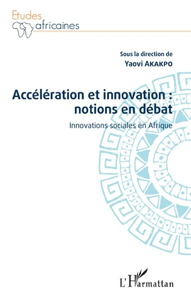
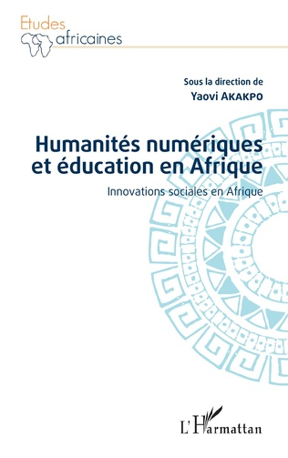
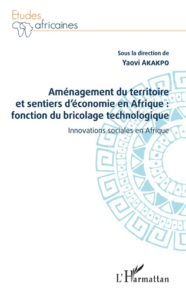
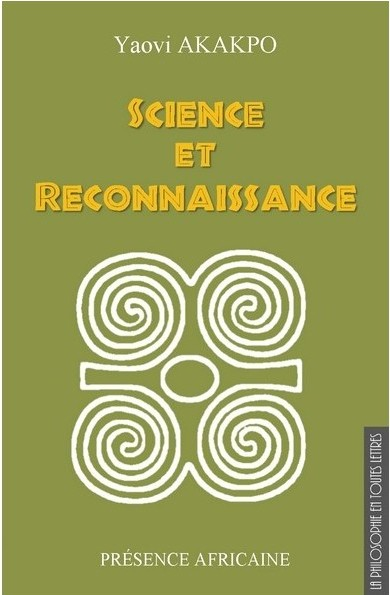
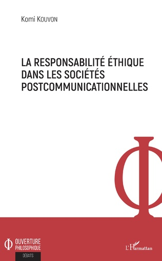

La notion d'innovation sociale peut servir à interroger la capacité pratique des Afriques à être authentiquement modernes, en s'intéresseant aux chantiers multiformes où s'éprouvent et se jouent leur capacité d'autonomie : développement, démocratie, droit, économie, traditions, etc. Cette façon particulière d'interroger l'innovation sociale dans les Afriques en accélération, doit engager les sciences sociales et littéraires à ouvrir des sentiers du penser sur les bouleversements sociaux entretenus par le technocolonialisme, instrument principal par lequel les politiques et les économies libérales font l'histoire.
ACCÉLÉRATION ET INNOVATION : NOTIONS EN DÉBAT
Innovations sociales en Afrique
Yaovi Akakpo
Disponible aux lieux suivants: Éditions-harmattan Eyrolles Fnac
Les contributions à cet ouvrage appartiennent à deux champs : celui de l'innovation numérique et technologique et celui de l'éducation. Les premiers chapitres sont consacrés à l'humanisme numérique car on ne peut pas ouvrir un champ de réflexion sur les évolutions accélérées des systèmes éducatifs, sans considérer la singularité des innovations technologique et numérique auxquelles elles ne sont plus étrangères. Les contributions relatives aux plans de l'éducation et de la pédagogie présentent l'avantage d'avoir exploré, dans le contexte des modernités africaines, les enjeux et les problèmes de ce genre particulier d'innovation que sont l'innovation éducative et l'innovation pédagogique.
HUMANITÉS NUMÉRIQUES ET ÉDUCATION EN AFRIQUE
Innovations sociales en Afrique
Yaovi Akakpo
Disponible aux lieux suivants: Éditions-harmattan Fnac laboutiqueafricavivre
Cet ouvrage obéit à deux pistes d'analyse et de prospection des modernités africaines. La première concerne l'organisation sociale de l'innovation. La deuxième concerne l'alternative qu'est l'économie informelle dans les agendas de modernité en Afrique. C'est dans la logique de ces pistes d'analyse et de prospection des modernités africaines que les chapitres de cet ouvrage ont exploré des problématiques spécifiques, relatives à l'aménagement du territoire, à l'artisanat, au transport, à l'agriculture, à la démographie, à l'environnement et à l'économie informelle.
AMÉNAGEMENT DU TERRITOIRE ET SENTIERS D'ÉCONOMIE EN AFRIQUE : FONCTION DU BRICOLAGE TECHNOLOGIQUE
Innovations sociales en Afrique
Yaovi Akakpo
Disponible aux lieux suivants: Éditions-harmattan Fnac decitre
Dans la mesure où elle réside dans le pouvoir structurant de la science et de la technique, la technocolonisation institue et reproduit, en général, des rapports multiformes de domination. Elle paraît faire notamment de la volonté de coloniser une dimension de l'histoire. La technocratie, une émanation de cette colonisation particulière, est telle que, dans les rapports politiques, économiques, sociaux, la puissance des uns se constitue de l'a-puissance des autres.
LE TECHNOCOLONIALISME
Agir sous une tension essentielle
Yaovi Akakpo
Disponible aux lieux suivants: Éditions-harmattan furet lesmots-leschoses
Que la rationalité tech noscientifique soit instrument de domination et force de déstructuration est un fait examiné ici et le rôle qu’elle joue dans les fractures qui partagent le monde globalisé entre centres et périphéries est aussi souligné avec insistance. Il ne s’agit pas pour autant d’instruire un procès, qui serait bien inutile, de la science et des techniques. Ni non plus d’invoquer des technologies dites « traditionnelles » en les parant de toutes les vertus pour en faire une alternative à la violence technologique. Il s’agit de comprendre qu’il n’y a pas de formule de développement qui dispense de la nécessité de l’innovation et d’en tirer les conséquences. De manière générale, ce livre rappelle que le pouvoir de la technique est ambivalent, qu’elle est certes puissance mais qu’elle peut aussi devenir facteur de développement humain, dans la solidarité. Trente ans après l’ouvrage du philosophe ivoirien Sidiki Diakité sur La violence technologique et la question du développement, il était temps de revenir, aujourd’hui, sur la question. Le livre de Yaovi Akakpo relève avec bonheur le défi.
SCIENCE ET RECONNAISSANCE
Collection "La philosophie en toutes lettres"
Yaovi Akakpo
Disponible aux lieux suivants: presenceafricaine kinozoo mediatheques-niger
À propos
Cet ouvrage apporte des précisions sur les diverses étapes du parcours et du cheminement du philosophe apprenant, lorsqu'il doit réaliser et soutenir, au terme de sa formation, un travail de recherche. L'auteur fait des mises au point autant sur la méthode de recherche documentaire et la rédaction que sur la mise en page du travail.
RECHERCHE EN PHILOSOPHIE;DE L'INTUITION DU THEME A LA SOUTENANCE DE THESE
Yaovi Akakpo
Disponible aux lieux suivants: librairie-gallimard amazon renaud-bray
 Cet ouvrage explore une question : comment les sociétés africaines auxquelles le projet des sciences modernes était étranger, s'approprient-elles celui-ci comme composante de leur destin contemporain ? Utilisant les outils de l'histoire des sciences et de la sociologie des sciences, l'auteur étudie des expériences de développement dans lesquelles s'engagent les sociétés africaines : technopole, transfert de technologie, libertés académiques, statut du travail intellectuel et des savoirs traditionnels, recherche universitaire. A travers l'analyse de ces expériences, le livre montre qu'en Afrique les obstacles au développement technoscientifique et la possibilité pour les sciences et technologies de s'enraciner sont les faces d'une même monnaie. C'est dans le sens des mutations multidimensionnelles qui les habitent de plus en plus que les sociétés africaines peuvent négocier leur ouverture à la rationalité technoscientifique. La position épistémologique ainsi dégagée est une invitation des sociétés en développement à des politiques scientifiques plus rationnelles, autonomes et cohérentes. C'est en harmonie avec des ambitions volontaristes et manifestes de développement que les nations africaines peuvent s'offrir des agendas rationnels du progrès des sciences et technologies.
Cet ouvrage explore une question : comment les sociétés africaines auxquelles le projet des sciences modernes était étranger, s'approprient-elles celui-ci comme composante de leur destin contemporain ? Utilisant les outils de l'histoire des sciences et de la sociologie des sciences, l'auteur étudie des expériences de développement dans lesquelles s'engagent les sociétés africaines : technopole, transfert de technologie, libertés académiques, statut du travail intellectuel et des savoirs traditionnels, recherche universitaire. A travers l'analyse de ces expériences, le livre montre qu'en Afrique les obstacles au développement technoscientifique et la possibilité pour les sciences et technologies de s'enraciner sont les faces d'une même monnaie. C'est dans le sens des mutations multidimensionnelles qui les habitent de plus en plus que les sociétés africaines peuvent négocier leur ouverture à la rationalité technoscientifique. La position épistémologique ainsi dégagée est une invitation des sociétés en développement à des politiques scientifiques plus rationnelles, autonomes et cohérentes. C'est en harmonie avec des ambitions volontaristes et manifestes de développement que les nations africaines peuvent s'offrir des agendas rationnels du progrès des sciences et technologies.
L'HORIZON DES SCIENCES EN AFRIQUE
Yaovi Akakpo
Disponible aux lieux suivants: amazon
L’incompréhension demeure à ce jour « l’impensé de la pragmatique ». L’ambition de cet ouvrage est de combler cette insuffisance théorique. Peut-on, et comment, envisager l’incompréhension comme un phénomène propre à l’interaction communicationnelle ?
Si nos jeux de langage effectifs donnent parfois lieu à l’incompréhension, alors elle n’est pas à voir comme l’irruption de l’irrationnel mais plutôt comme une manifestation autre de la raison communicationnelle, conçue sur un modèle autre que celui de la raison logos.
C’est du moins l’hypothèse qui oriente cette réflexion, s’appuyant d’abord sur la théorie wittgensteinienne de la pluralité-hétérogénéité fondamentale des jeux de langage pour caractériser l’usage communicationnel effectif des mots, puis en procédant à la déconstruction des théories pragmaticiennes du langage et de la communication.
JEUX DE LANGAGE ET RAISON COMMUNICATIONNELLE
Le statut de l’incompréhension dans le langage
Mawusse Kpakpo Akue Adotevi
Disponible aux lieux suivants: influxus exlibrisgroup
Cet ouvrage considère les expériences de la crise de la communication dans les sociétés modernes et interroge le projet de l'éthique de la discussion dont la finalité est la reconstruction des conditions idéales de l'intercompréhension. Comment, dans nos sociétés postcommunicationnelles sans légitimation transcendante, pouvons-nous espérer, à travers la discussion argumentative, parvenir à l'intercompréhension ? L'auteur propose de repenser l'activité communicationnelle à la lumière de l'éthique de la responsabilité. En faisant de la responsabilité pour autrui l'idée régulatrice de l'interaction communicationnelle, il renouvelle notre représentation de l'intercompréhension par la discussion argumentative. L'enjeu éthique de cette réflexion est la consolidation du débat public démocratique.
LA RESPONSABILITÉ ÉTHIQUE DANS LES SOCIÉTÉS POSTCOMMUNICATIONNELLES
Komi Kouvon
Disponible aux lieux suivants: editions-harmattan